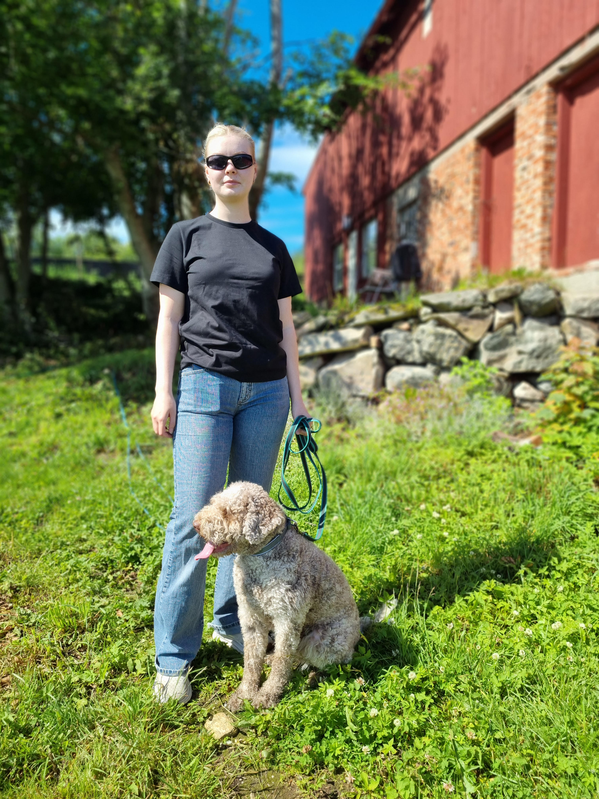

Hei og hopp, og hjertelig velkommen til min helt egne labyrint på det store internettet! Jeg heter Bajas og er en krøllete, energisk og kronisk nysgjerrig Lagotto Romagnolo. Her inne på siden min har jeg samlet mine aller beste minner, mest vellykkede snuseekspedisjoner og kanskje et og annet bilde hvor jeg ser uimotståelig søt ut (hvis jeg må si det selv). Enten du er en tobent venn, en firbent turkamerat, eller bare gikk deg vill på jakt etter trøfler, så er jeg utrolig glad for at du titter innom.
Når jeg ikke er opptatt med å vokte sofahjørnet eller jakte på tennisballer, liker jeg å holde denne siden oppdatert med små hverdagsgleder. Ta gjerne en titt rundt, legg igjen et virtuelt klapp på hodet hvis du vil, og føl deg som hjemme. Her er det alltid god stemning, høyt tempo og absolutt ingen røytegaranti – bare masse krøllete kjærlighet!
